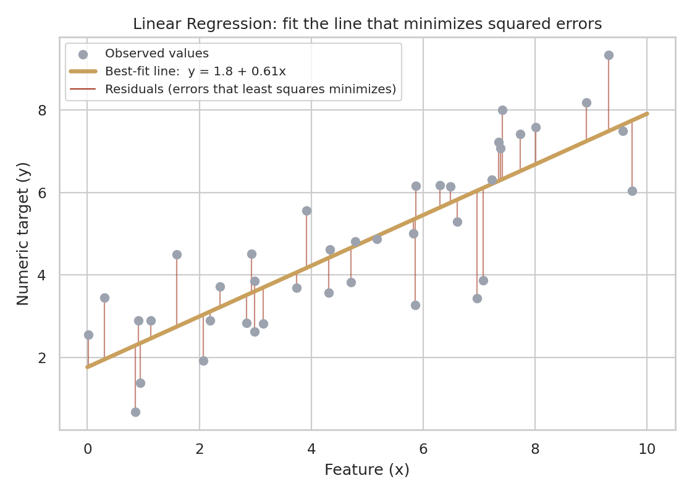
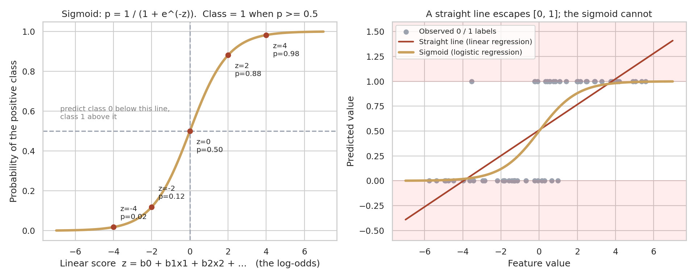
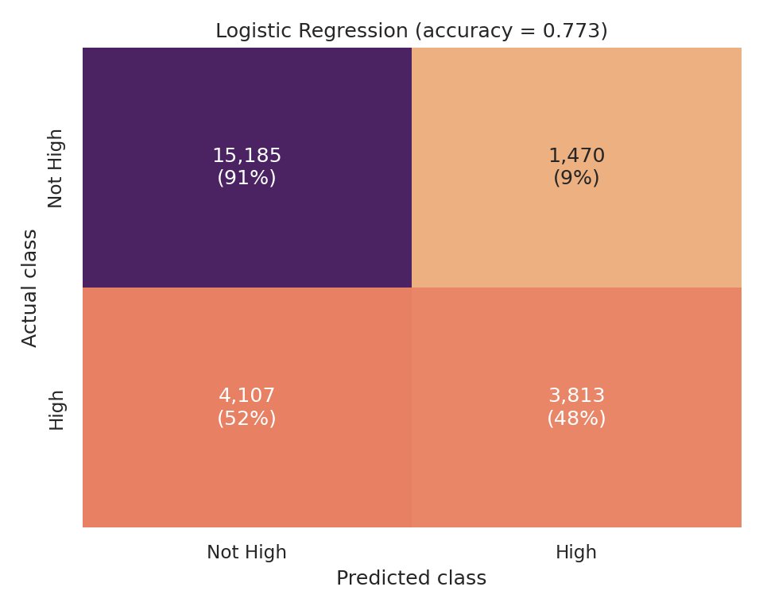
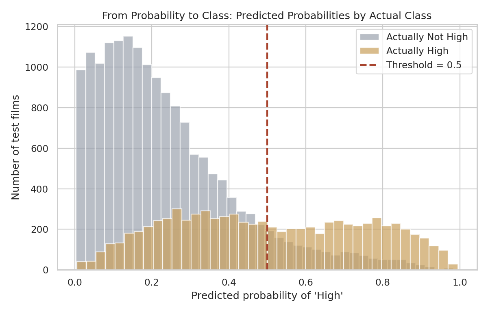
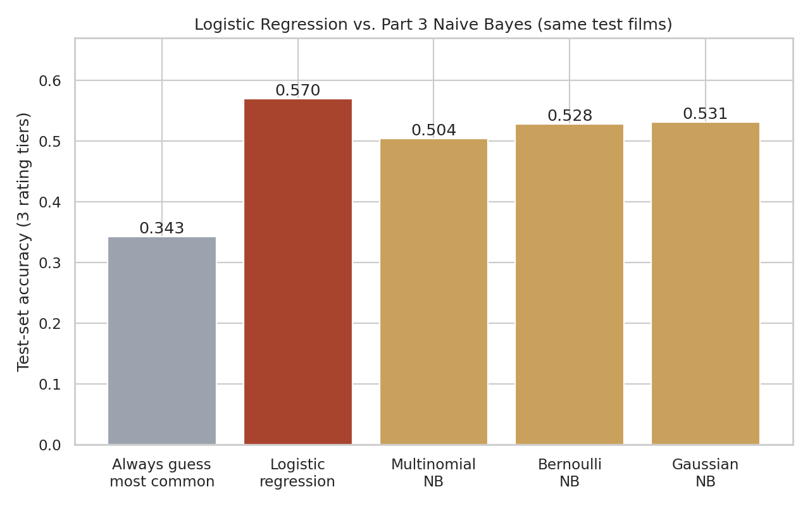

Section 07
Regression
Predicting a film's rating as a number with linear regression, and the chance of a High rating with logistic regression.
(a) Overview
Linear regression: predicting a number
Linear regression predicts a numeric target. It models the target as a weighted sum of the input features plus a constant:
predicted value = b0 + b1 × (feature 1) + b2 × (feature 2) + … + bn × (feature n)The weights, called coefficients, are chosen by least squares: the line (or, with many features, the flat surface) that makes the total of the squared gaps between predicted and actual values as small as possible. Those gaps are the residuals, drawn in red below. Each coefficient states how much the prediction changes when that feature rises by one unit while the others are held fixed, which is what makes the model easy to explain. Its quality is judged with three numbers: RMSE (the typical size of an error, in the units of the target), MAE (the average absolute error), and R² (the share of the variation in the target that the model explains, where 0 means no better than always predicting the average and 1 means perfect). The method assumes, roughly, that the relationship is linear, that errors have similar spread and are independent of one another, and that no two features are near-copies of each other.

Illustrative toy data (not the movie dataset).
Logistic regression: predicting a probability, then a class
Logistic regression predicts a category; in its basic form, one of two. Despite the name, it is a classification method. It starts from the same weighted sum, called the linear score z, which can be any number from very negative to very positive. A probability must stay between 0 and 1, so z is passed through the sigmoid function:
p = 1 / (1 + e^(−z)) z = b0 + b1·x1 + b2·x2 + …A large positive z gives a probability near 1, a large negative z gives one near 0, and z = 0 gives exactly 0.5. The probability then becomes a class with a threshold: by default, predict the positive class when p ≥ 0.5. The model is fitted by maximum likelihood rather than least squares: it chooses the coefficients that make the observed labels as probable as possible, which has no closed-form answer and is solved by iteration.
| Linear score z | Probability p | Odds p / (1 − p) | Predicted class (threshold 0.5) |
|---|---|---|---|
| −4 | 0.018 | 0.018 | 0 |
| −2 | 0.119 | 0.135 | 0 |
| 0 | 0.500 | 1.000 | 1 (p ≥ 0.5) |
| +2 | 0.881 | 7.389 | 1 |
| +4 | 0.982 | 54.598 | 1 |

Left: the sigmoid turns any linear score into a probability. Right: a straight line fitted to 0/1 labels predicts impossible values below 0 and above 1; the sigmoid cannot.
What the coefficients mean
The linear score z is the log-odds: z = ln( p / (1 − p) ). The odds of an event are its probability divided by the probability that it does not happen, so a probability of 0.75 is odds of 3 to 1. Raising a feature by one unit adds its coefficient b to z, which multiplies the odds by eb. A coefficient of 0 leaves the odds unchanged, a positive coefficient raises them, a negative one lowers them, and a coefficient of 0.69 doubles them (e0.69 ≈ 2).
| Linear regression | Logistic regression | |
|---|---|---|
| Predicts | A number (any value) | A probability, then a class |
| Target | Numeric (here, the rating) | Two classes (here, High vs. not High) |
| Fitted by | Least squares (minimize squared errors) | Maximum likelihood (minimize log loss) |
| Judged by | RMSE, MAE, R² | Confusion matrix, accuracy, AUC |
| A coefficient means | Change in the predicted value per unit | Change in the log-odds per unit; odds × eb |
(b) Data Prep
Labeled data and the two targets
Supervised learning requires labeled data: every film comes with the answer the model is trying to predict. Two different targets are used here, one per method:
| Method | Target column | What it is |
|---|---|---|
| Linear regression | averageRating | The film's average IMDb rating, a number between 1 and 10 (numeric target) |
| Logistic regression | is_high | 1 if the film is in the High rating tier (rating above 6.50, the top third), otherwise 0 (two-class label) |
| Extra comparison | rating_class | The three tiers Low / Medium / High from Part 3, used for a like-for-like comparison with Naïve Bayes |
The inputs are the same 18 numeric columns used in Part 3: log-transformed vote count, runtime, release year, number of genres, number of international regions, a 0/1 franchise flag, and twelve 0/1 genre indicators. The rating itself is never an input. About 32% of films are High, so always guessing "Not High" would be right 67.8% of the time on the testing set; that is the baseline for logistic regression, and it is why recall and AUC are reported alongside accuracy. For logistic regression the five numeric inputs are converted to z-scores using the training set's mean and standard deviation (the 0/1 flags are left alone); linear regression uses the raw values, so its coefficients stay in natural units.

Link to the data:
data/regression_data.csv
(all 122,872 films, with a split column marking each as train or test).
Training and testing sets
The training set (98,297 films) builds each model and the testing set (24,575 films) measures it. They are the same sets used for Naïve Bayes and Decision Trees in Part 3, so results can be compared directly. The split was random, stratified by rating tier, and made by film, so every film is in exactly one set and the two share nothing.
The sets must be disjoint. Regression models, too, can fit the particular films they were trained on more closely than they will fit new films; scoring on those same films would flatter the model and report an error smaller than the one it will make on films it has never seen. The overlap was checked in code and found to be zero.


The same split as Part 3: data/train_set.csv · data/test_set.csv
(c) Code
Python with scikit-learn. Full script: scripts/regression.py
from sklearn.linear_model import LinearRegression, LogisticRegression
from sklearn.metrics import mean_squared_error, mean_absolute_error, r2_score
from sklearn.metrics import accuracy_score, confusion_matrix
# LINEAR regression: numeric target
lin = LinearRegression().fit(X_train, train["averageRating"])
pred = lin.predict(X_test)
rmse = mean_squared_error(test["averageRating"], pred) ** 0.5
mae = mean_absolute_error(test["averageRating"], pred)
r2 = r2_score(test["averageRating"], pred)
# LOGISTIC regression: two-class target (1 = High tier, 0 = not High)
logit = LogisticRegression(max_iter=2000).fit(X_train_scaled, train["is_high"])
proba = logit.predict_proba(X_test_scaled)[:, 1] # probability of "High"
pred = (proba >= 0.5).astype(int) # threshold -> class
print(accuracy_score(test["is_high"], pred))
print(confusion_matrix(test["is_high"], pred))
odds_ratios = np.exp(logit.coef_[0]) # what each coefficient does to the odds
(d) Results
Linear regression
| Measure (testing set) | Linear regression | Baseline: always predict the average rating |
|---|---|---|
| RMSE | — | — |
| MAE | — | — |
| R² | — | 0 (by definition) |
Fill from your console output or regression_metrics.json.

Each cell counts test films. A perfect model would put every film on the gold diagonal.
Two coefficients in plain words

Logistic regression: High tier vs. not High
| Measure (testing set) | Logistic regression |
|---|---|
| Accuracy | — |
| Baseline accuracy (always "Not High") | 0.678 |
| Recall for High (share of High films found) | — |
| Precision for High (share of "High" predictions that are right) | — |
| ROC AUC | — |


One coefficient and the odds

Comparison with Naïve Bayes (Part 3)
On the same three rating tiers and the same 24,575 test films, multinomial logistic regression can be scored against the three Naïve Bayes variants from Part 3. On the two-class task, Gaussian Naïve Bayes is refit so the comparison with logistic regression is like for like.
| Three tiers (Low / Medium / High) | Test accuracy |
|---|---|
| Baseline: always guess the most common tier | 0.343 |
| Naïve Bayes, Multinomial (Part 3) | 0.504 |
| Naïve Bayes, Bernoulli (Part 3) | 0.528 |
| Naïve Bayes, Gaussian (Part 3) | 0.531 |
| Logistic regression, three tiers | — |
| Two classes (High vs. not High) | Accuracy | ROC AUC | Recall for High |
|---|---|---|---|
| Logistic regression | — | — | — |
| Gaussian Naïve Bayes | — | — | — |
